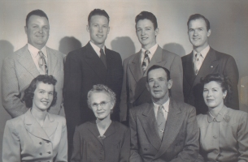

ANNA MAE HASSELL
(by Diana Cluff)

Born March 22, 1928 in Bluewater, New Mexico with Aunt Mary as her midwife. The fifth child and second daughter of Annie and Mayner Hassell. When nearing school age someone asked Anna about her birthday, "March what?" She proudly answered, "Sunday School march!" Anna loved to read and spent many summer hours licking salted lemons while reading up in trees. As a teenager Anna wanted to become a doctor and help all who knew her with ideas she later learned and put into practice about health. Anna loved the family dances that took place weekly in Bluewater. All the family was there, little children asleep on the floor or in their parent�s laps while the local band/orchestra played the music (actually, just a few people who could play piano or fiddle or you name it). Anna loved school and did very well with it. Prior to her marriage, she had made arrangements with her high school to complete the four year course in three years. This meant no study halls and solid days of classes. It has showed up in her life in all the areas she has educated herself.
Anna watched her brothers and father make and build their Bluewater family home with adobe bricks She played with pebbles, outlining houses, which led to a lifelong love of building. She treated her big brother, Ray, with kindness so he would go with her to the outhouse at night when it was dark. When she became a teenager, he installed a real bathroom with running water in their adobe home. Home chores included hoeing long rows in the garden each day. Her first job was weeding a garden for her great uncle, Uncle Call, in Bluewater. In her teens she bought her own toothpaste, deodorant and other personal items that were new items at the time, because her family didn�t have them. Some of Anna�s girlfriends are still her friends today and she still takes time with them in travel and phone calls.
Anna was just twelve when she noticed Elmont (Elmont and Ray were close friends) and they started dating. One day on a date in the hills of Bluewater, Elmont and Anna both heard beautiful singing, which was confirmed to Anna in her later years that these were the voices of the family they would someday have. On Anna�s first date with Elmont she ordered an expensive malt at the soda shop. Elmont didn�t have anything, as it took all his money for the soda and movie. Anna married Elmont at age 15 in Bluewater in 1943 during World War II. Ten days before Anna�s 17th birthday she had her first child and went on to have six more until she was 34 years old. She had three daughters and four sons. She loved to teach her children all the great music, books, manners, cleanliness and other things. She would gather her children around her and read to them stories of the Book of Mormon and poems of great worth to share her love of learning. Anna was in many drama productions in the ward. She gave talks in Church and served in many positions such as Primary President and Mia Maid Advisor. Her Mia Maids still love her and are close to her now that they are in their older age. When any one needed help Anna was quick to respond. She took food to others and was especially called on by many for counsel. Her home was filled year after year with people who needed help with their problems. It got to be so many people coming that she would say, �Do you mind if I work on my family chores as we talk?� No one minded and Anna always gave just the right advice to everyone and helped them so much with their various problems. One of her greatest achievements was to help a young woman who had recently become a widow. Fawn Cox was in her twenties with three children to raise. She went to Fawn and gave her comfort and support daily. She then set about getting Fawn back into school and she was able to get a job to support her family.
Each night Anna would serve plain food from scratch but not too much of it so as to keep her family in good health and good shape. We ate homemade bread, beans, potatoes and the food that today doctors try to get people back to for good health. As we ate, Mother would teach us about great composers and play their music. She used the dinner table to teach manners, appetite control and other valuable discussions. We always came to the dinner table and knelt by our chairs for family prayer before we ate. There was always lots of laughing and a light atmosphere at the table. If we were late for dinner when called we had to sit on a step for a while until invited to eat. Younger members had to go through a "smell test" of their hands prior to being seated. Dinner was my favorite time at our home. We always learned from Mother who gave each of us a chance to share things with the family and gave us her special lessons that have helped us all to have better lives.
She took up bookkeeping for Daddy and spent hours learning the skill as well as learning to type. Anna took the GED test and got her high school degree. Mother had many parties at our home with the young married people in the ward. They had so much fun and laughter as they played games and ate fun food. Many winter nights all the young marrieds would go to the mountains of Ashland and go sledding down the slopes in the moonlight. Mother expected her children to be the best and treated them as though they were the best in all areas. If anyone had a problem in anything, she set out to solve the problem and didn�t rest until the problem was solved. Some of the problems were speech problems, with one child, or health problems, with another. She cleaned the house and worked on our diet with Grandmother Hassell when the children got pin worms. She expected us to obey and have manners at home and everywhere we went. When we would travel we were to sit and be still, using singing and games to pass the time. When we worked on our talents, such as sports, dancing, music or singing, she told us we could do it and we all believed her and did a good job in everything we tried. Mother did not indulge us in any area of life which I am so thankful for. We were never given too much of anything; food, sweets, gifts, money, television, attention or anything else that would spoil us.
We were taught truth and had the joy of living truths such as baptism, temple marriage, compassion, service to others, how to pray to our Father in Heaven and obey his commandments. This gave us a head start on life that most of the world doesn�t get until the next life. These were the most valuable truths she taught us. She taught us to fast two meals each month on Fast Sunday, starting out with fasting for one meal when we were children then two when we reached our older years. That is the most valuable lesson I have ever learned, as it has helped me control my body in every way, such as food intake, thought control, temper, making myself work, being honest and having integrity. We also were taught to pray, attend church each week, and other meetings during the week, to worship the Lord and give thanks daily for all our blessings. This is also another great blessing that I am so thankful for that has helped not only me but my children have the happiest life possible on earth.
Mother sewed many things for us. The first thing I remember was a beautiful full length light pink flower-girl dress for me to use for her brother Clayton�s wedding. The next thing was my baptism dress. Mother cut all the family�s hair on a regular basis. She always did a good job of selecting a style that would look great on us. Each summer in the 50�s and 60�s mother took time to take us to Lithia Park, the Varsity movie theatre, swimming at Jackson Hot springs or Twin Plunges where she swam with us. She would drop us off at the park and movies and pick us up later. She gave us bamboo fishing poles to fish in the stream. We would slide down the poison oak hills in the park, visit the water sheds, fish, wade in the creek and run on the grass. We would see the zoo and be ready to go home when mother picked us up. When we went swimming Mother, often expecting a baby, would stand at the fence and watch us swim, then tell us what great swimmers we were. She would suffer in a hot car when we�d ask that the windows be up as we drove home being wet and cold. Mother sang as she worked each day. It made our home seem so pleasant and stable. When canning peaches from our trees in the yard, and other fruit we went to the orchards in the valley to obtain, mother would line us all up in our swimming suits in the kitchen and give us a chore of peeling or putting fruit in a jar. We canned hundreds of jars a year and each Sunday we would have cheese sandwiches and bottled fruit for supper after church.
Mother stayed home with us while we grew up and didn�t work out of the home until one summer when I was about 14. She worked at the Medford airport as Dad�s secretary. Our home was so different without her. It was as if our family had almost died. It wasn�t the cooking and cleaning that we missed, we were old enough to do that for ourselves, it was Mother�s presence that we missed. We missed her teaching us all day, watching over us, laughing with us, hearing her sing and do all the household chores for us she always did. The experience was so sad, that I vowed I would never work outside of my home when I married and after 40 years of marriage and 10 children, I never have.
Mother never forced us to do things but suggested the truth, such as fasting. She gave us an example then let us decide for ourselves if we wanted to live it. After Yvette was born, Aunt Elgin helped with the daily mopping of the dining room and kitchen floors. Mother taught us to clean and cook on a daily basis. The house got messed up by the children but was always very clean. Anna gave her children advantages such as music, dance, piano and modeling lessons to help them develop.
Anna had a great voice for singing and sang in church many times. Anna directed a major play in church, "The Promised Valley", as a thirty three year old woman and was very successful with it. Anna loved family, reading, poetry, art, dancing, traveling, decorating and the construction of our house. She even has learned how to work on cars and her RV. She has taken the inside of her RV apart, refurbished it, and put it back together. Anna got a mail order course on Real Estate and learned the business. Then she started her own business and was very successful in her forties and fifties, is still doing well in her seventies because of her work and knowledge of the business. Anna built a housing tract and shopping center in southern California and was #172 on a list of home builders in southern California. She worked in San Diego with a state senator and other top people in the business. Anna remodeled a home, with her own hands, that had a hot tub and pool in El Toro California. She is good at gardening and had many tropical plants in her yard with banana trees and all kinds of fruit. Anna built the house she now lives in. She has loved to travel many places on the earth. She has been to Europe, Hawaii and the Mediterranean as well as several other places. She loves the beach and living in sunny places and being around interesting people that she can visit with.
Anna has 39 grandchildren and many great grandchildren. She loves all her family and takes time to talk to and visit them often. She always has her ability to solve problems to share being creative and positive. If anyone needs her, she goes and stays until the need is satisfied. She stays in the hospital with family when an illness comes to them and cares for them when they go home if they will let her. This she has done whenever she feels they need her. One of Anna�s greatest talents is TENACITY. She loves to help others and talk with them. Her conversations are always very interesting and informative. If she sees a need in anyone, she will fill it if permitted, with time, money or talent. She suffered the loss of her third child Kathleen who was only 29, from cancer in 1978. She has looked after Kathleen�s husband and children all these years and even taken Lisa to live with her for some years, teaching her Real Estate. After many stumbling in her life, Anna hangs onto the iron rod each day by attending her meetings and serving others that she sees in need. She has been able to cure her health problems, which amazes us. She prepares and eats the best of foods. She works daily doing work that is hard, using her mind and prayer to solve all the problems that come to her. She keeps her body in shape by walking, swimming in lakes in the summer and tennis, which is a love of hers. We all love her very much for all the love and service and compassion that she has so freely given to everyone.